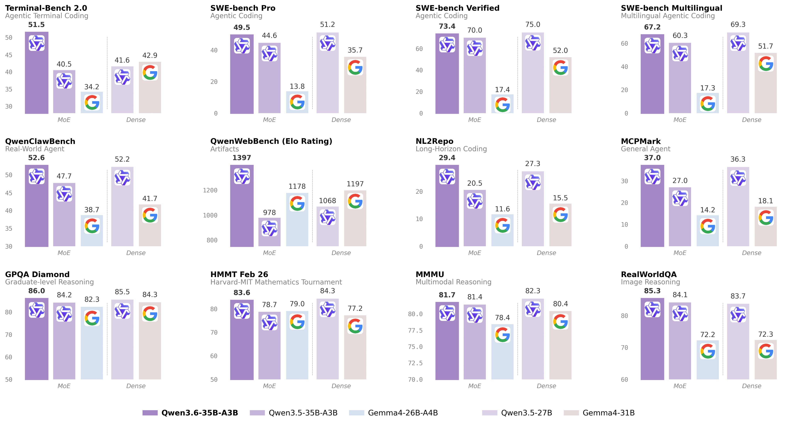
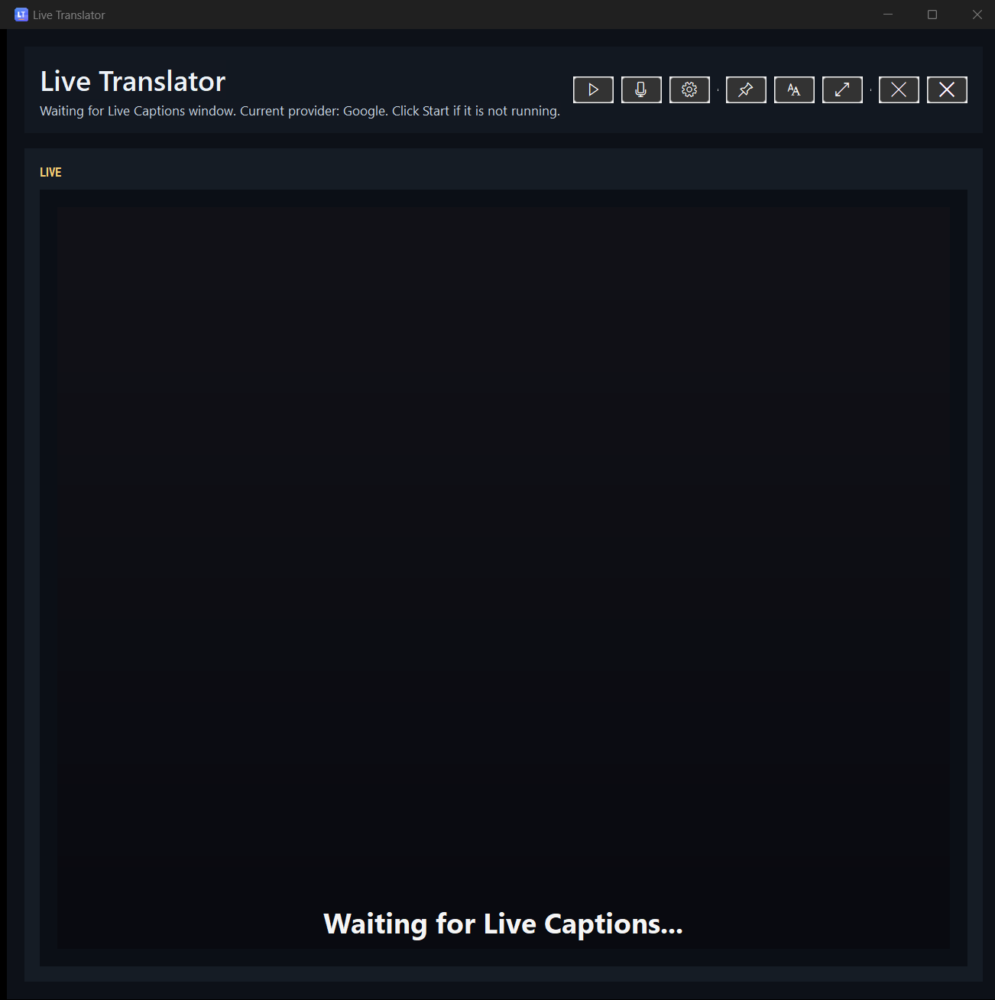
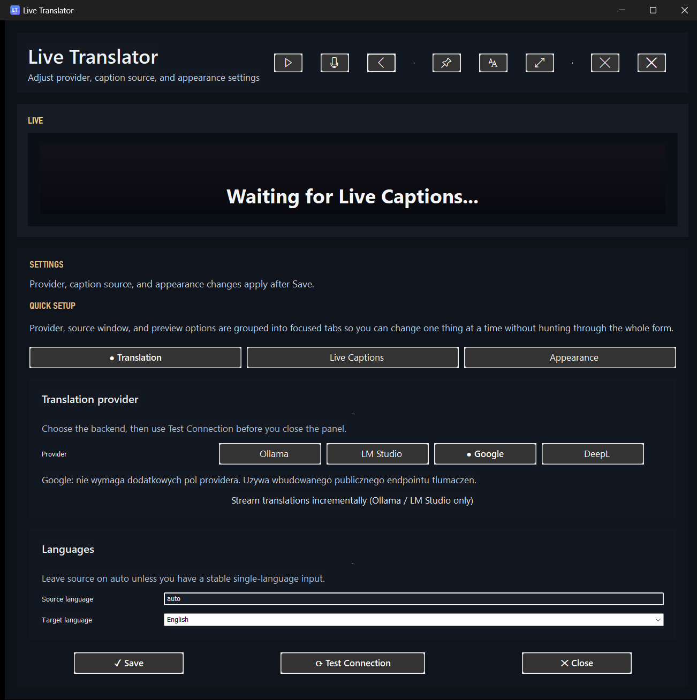
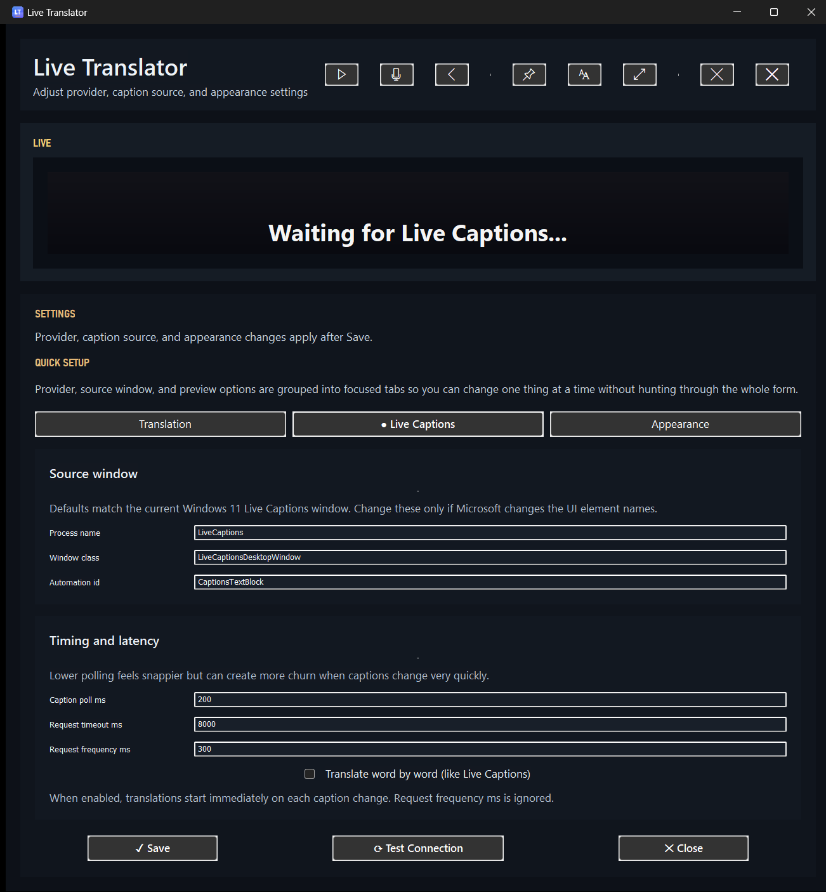
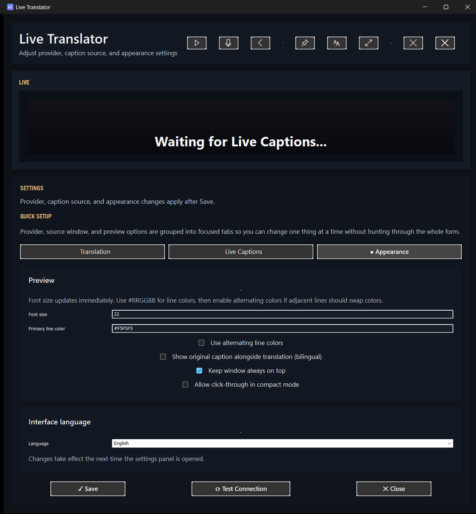

DevOps internal demo · 2026
Live Translation Demo
A tiny Windows overlay that turns any on-screen speech into real-time bilingual captions.
Scroll ↓ or press Space / →
DevOps internal demo · 2026
A tiny Windows overlay that turns any on-screen speech into real-time bilingual captions.
Scroll ↓ or press Space / →
The honest position: treat AI like a powerful intern with a loud mouth — useful, but never unsupervised on critical paths.

Qwen 3 coding benchmarks — local MoE catching up to frontier.
Huge frontier model. Exceptional at long-context refactors, multi-file reasoning, and test authoring.
Use for: hard architectural work, tricky debugging.
A small model that keeps wrecking benchmarks. Cheap to serve, fast to iterate with, good enough for daily driver tasks.
Use for: glue code, CLI tools, internal utilities.
Runs offline. No data leaves the machine. Great for regulated environments.
Use for: air-gapped dev, sensitive codebases.
The cost of a "competent" model is collapsing. The question is no longer if, but where you let it help.
Live demo
A real-time translation overlay for Windows. Written in Go. ~95% of the first draft came from a local model.

Main overlay — compact, dark, unobtrusive.

Translation providers — swap in one click.
tiny to large-v3 — trade latency for accuracy.
Captions & ASR configuration.

Appearance — dark, readable, configurable.
Single static binary. No installer.
Native Win32 UI — no Electron, no Chromium.
Partial tokens rendered as they arrive.
Force consistent terminology per domain.
Window bounds, language, providers.
build · vet · test · staticcheck · govulncheck on every push.
AI as a force multiplier for peripheral tooling — that's where the safe ROI lives today.
Fin
Source, binary, and this deck live atgithub.com/Ironship/live-translator-go